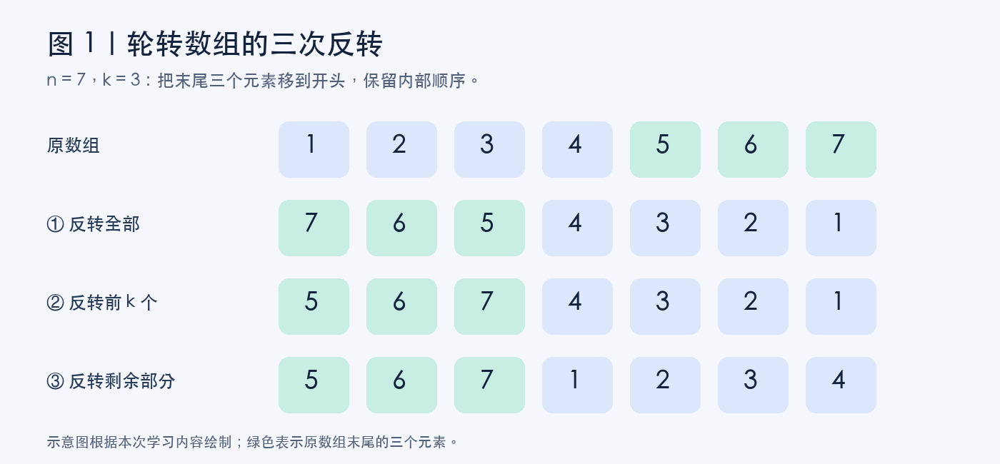
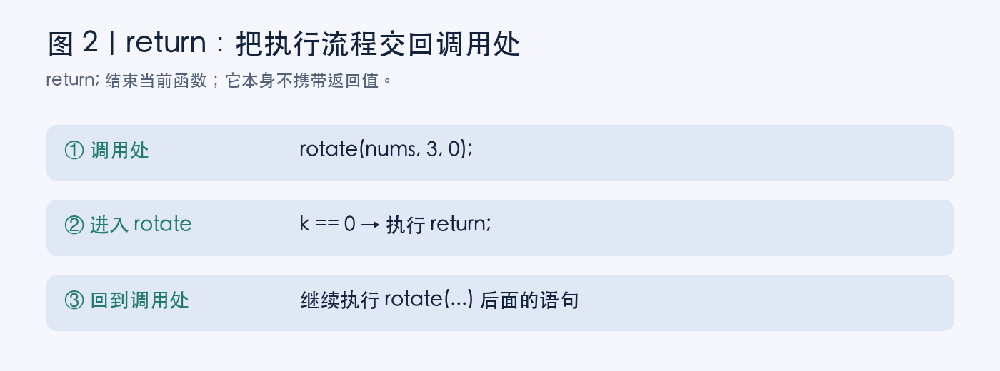
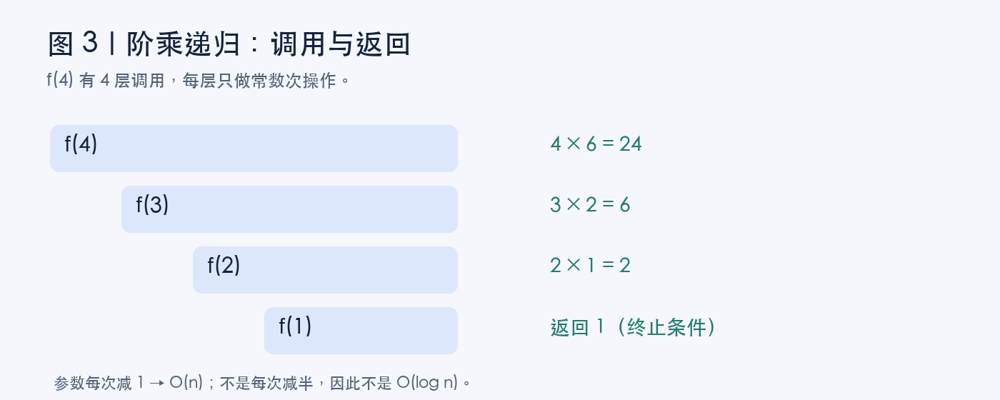
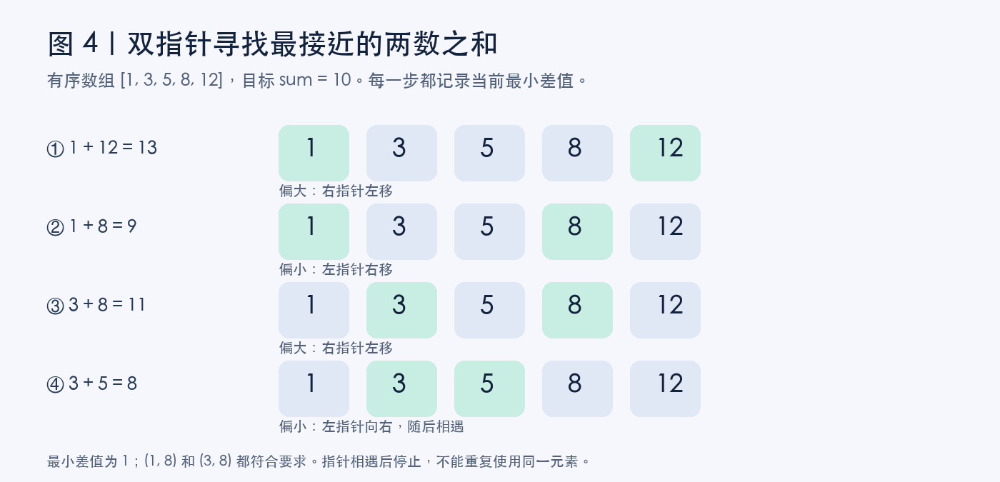

从轮转数组到双指针：我的 C 语言与时间复杂度学习笔记
学习日期：2026 年 9 月 10 日。本文根据当天的练习和提问整理，包含轮转数组、函数返回、数组边界、递归以及复杂度分析。配图为根据学习内容重新绘制的示意图，每张图片下方均附说明；不是平台运行结果截图。
今天做题时，我发现卡住自己的不只是算法，还有一些很小的细节：return; 到底回到哪里？为什么数组最后一个位置要写 numsSize - 1？二分查找明明是 O(log n)，为什么有些题的最优选项却是 O(n)？
这篇笔记就从这些问题出发，把代码的执行过程和复杂度联系起来。
一、轮转数组：把末尾 k 个元素搬到最前面
题目要求把数组向右轮转 k 个位置。例如：
原数组：[1, 2, 3, 4, 5, 6, 7]
k = 3
结果： [5, 6, 7, 1, 2, 3, 4]
如果每次只移动一格，就要先保存最后一个元素，再把其他元素往右挪，最后把保存的元素放在开头。每次需要 O(n)，重复 k 次就是 O(nk)。
更高效的办法是三次反转：先反转整个数组，再反转前 k 个元素，最后反转剩下的元素。

图 1：绿色方块表示原数组末尾的三个元素。先交换两部分的位置，再恢复各自内部的顺序。图片为学习示意图。
把数组分成 A = [1,2,3,4] 和 B = [5,6,7]，目标就是把 AB 变成 BA。整体反转后得到“倒序的 B + 倒序的 A”，分别再反转一次，就得到目标。
完整 C 代码如下：
// 反转闭区间 [left, right]，包含左右两端。
void reverse(int* nums, int left, int right) {
while (left < right) {
int temp = nums[left];
nums[left] = nums[right];
nums[right] = temp;
left++;
right--;
}
}
void rotate(int* nums, int numsSize, int k) {
// 本题保证 numsSize >= 1，k >= 0。
k %= numsSize;
if (k == 0) {
return;
}
reverse(nums, 0, numsSize - 1);
reverse(nums, 0, k - 1);
reverse(nums, k, numsSize - 1);
}
k %= numsSize 是因为移动一整圈会回到原样。例如长度为 7，右移 10 次等价于右移 3 次。
三次反转加起来仍然只处理线性数量的元素，所以时间复杂度是 O(n)；只使用几个辅助变量，额外空间复杂度是 O(1)。
二、我问过的问题：为什么这里要用 return？
if (k == 0) {
return;
}
当 k == 0 时，数组不需要移动，答案已经在原数组里了。return; 让函数立刻结束，省去后面不必要的操作。
这里需要区分两件事：
return;：结束当前函数，不携带返回值，适用于这里的void函数。return 0;：结束当前函数，同时返回整数0，可用于返回类型为int的函数。
“没有返回值”不意味着函数什么都没做。rotate 通过 nums 修改原数组，调用者能看到修改后的内容。
return 之后，程序去哪里？
回到调用这个函数的位置，继续执行调用语句之后的代码。

图 2：当 rotate 遇到 return 时结束本次调用，调用者继续执行后面的语句。图片为执行流程示意图。
下面的调用示例要接在前面的函数定义之后，或者提前声明 rotate，并在文件开头包含 <stdio.h>：
int main(void) {
int nums[] = {1, 2, 3};
rotate(nums, 3, 0); // 进入 rotate，遇到 return 后回到这里
printf("结束了\n"); // 然后执行这一行
return 0;
}
在力扣上，平台提供了调用 rotate 的代码，所以编辑器里通常看不到调用者。函数结束后，平台会继续检查数组内容。
对于这份三次反转实现，省略 k == 0 的判断也不会改变最终结果：中间的空区间不执行交换，而整个数组会反转两次。但提前返回更直接，也节省操作。
三、为什么是 numsSize - 1？
numsSize 表示元素个数，数组下标从 0 开始。
元素： 1 2 3 4 5 6 7
下标： 0 1 2 3 4 5 6
有 7 个元素，最后一个下标就是 6，即 numsSize - 1。
我们定义的 reverse 接收的是包含两端的下标范围，所以三个区间分别是：
| 操作 | 左端下标 | 右端下标 |
|---|---|---|
| 反转全部 | 0 | numsSize - 1 |
| 反转前 k 个 | 0 | k - 1 |
| 反转剩余部分 | k | numsSize - 1 |
如果把最后一个位置写成 numsSize，就可能访问数组范围之外的内存。C 语言不会自动保证这种访问安全，不能因为某次运行没有报错，就认为写法正确。
今天遇到的两个代码错误
一个是把语句末尾的分号 ; 写成了冒号 :，导致编译失败；另一个是最后一次反转把右边界写成了 numsSize。
它们是两类问题：前者属于语法错误，编译器能直接指出；后者是边界错误，可能通过编译，但执行时产生未定义行为。修改代码时，既要看标点，也要逐个检查区间端点。
四、阶乘递归为什么是 O(n)？
int f(unsigned int n) {
if (n == 0 || n == 1)
return 1;
else
return n * f(n - 1);
}
这段程序计算阶乘。以 f(4) 为例，调用过程是：
f(4) → f(3) → f(2) → f(1)
到达终止条件后，结果逐层返回。

图 3：左侧是逐层递归调用，右侧是各层计算出的返回值。图中结果只针对 n = 4。
对正整数 n，大约有 n 层调用。每一层只做固定数量的判断、减法、乘法等操作，因此：
T(n) = T(n - 1) + O(1)
= O(n)
这里按基础算法题的惯例，把固定宽度整数运算看作常数时间，并在数值可表示的范围内讨论程序行为。原代码的返回类型容量有限，不适合直接计算很大的阶乘。
另外，递归需要保留尚未返回的函数调用，因此栈空间也是 O(n)。
我需要记住的是：结果为 n!，不代表算法执行了 n! 次操作。 参数每次减 1，调用次数随 n 线性增长；如果参数每次减半，且每层只有一次递归调用和常数额外工作，才会得到 O(log n)。
五、大 O：忽略常数系数，也别把它等同于最坏情况
今天有一道选择题问“关于大 O 表示法，说法错误的是”。我选了“大 O 一般表示算法最差的运行时间”，而题目答案是“会保留一个系数来更准确地表示复杂度”。
原因是大 O 表示增长的渐近上界，常用化简会忽略常数系数和低阶项。例如：
T(n) = 3n² + 5n + 10
通常写作 O(n²)
不保留 3，也不保留低阶项 5n + 10。这不表示常数对实际运行速度没有影响，只是大 O 不负责精确预测秒数。
还要补充一个严格的区别：“最好、平均、最坏”描述分析哪一种情况；“大 O”描述增长的上界。 最好情况、平均情况、最坏情况的时间函数，都可以用大 O 表达。课堂里常默认分析最坏情况，所以该题把“一般表示最差运行时间”视为正确，但它不是大 O 的定义。
例如线性查找：第一个元素就是目标时，最好情况是 O(1)；直到末尾才找到或根本不存在时，最坏情况是 O(n)。
六、二分查找是 O(log n)，为什么这题却选 O(n)？
题目给出一个有序数组，要求选两个不同位置的元素 a、b，让 a + b 最接近目标 sum。
我的疑问是：“数组有序，为什么不用二分查找？它不是更快吗？”
关键在于：一次二分的复杂度，不等于整个算法的复杂度。
如果先固定一个 a，确实可以二分寻找最接近 sum - a 的 b，检查插入位置附近的合法候选。但不知道哪个 a 最好，就需要枚举各个 a。因此总时间是：
枚举 a：O(n)
每次寻找 b：O(log n)
整体：O(n log n)
这道题可以利用有序性，从数组两端设置双指针。

图 4：绿色方块为当前指针指向的元素。目标为 10，最小差值为 1，(1,8) 和 (3,8) 都是合法答案。图片为手动推演示意图。
设左指针为 left，右指针为 right。当 left < right 时，先计算当前两数之和，记录它与目标的差值，再决定移动方向：
- 当前和偏小：左指针右移，让和有机会变大。
- 当前和偏大：右指针左移，让和有机会变小。
- 当前和等于目标：差值为 0，直接结束。
为什么不会漏掉更好的答案？如果当前和已经偏大，固定当前右端元素，换成更靠右的左端元素只会让和更大；因此在记录当前组合后，可以排除这个右端元素。当前和偏小时同理：固定左端元素，右端往左只会更小，因此可以排除这个左端元素。
每一步把一个指针向内移动一格，两个指针之间的距离最多缩小 n - 1 次，所以总时间是 O(n)，额外空间是 O(1)。求两数之和及差值时，还应选用足够宽的整数类型，避免溢出。
| 方法 | 整体时间复杂度 | 关键原因 |
|---|---|---|
| 枚举所有数对 | O(n²) | 组合数量是平方级 |
| 枚举一个数，再二分另一个数 | O(n log n) | 需要重复二分 |
| 有序数组双指针 | O(n) | 每步排除一个端点 |
七、今天留下的复习问题
以后再做类似题，我会先问自己：
- 函数是通过返回值交出答案，还是直接修改传入的数组？
- 参数表示“元素个数”还是“下标”？区间是否包含两端？
- 总共调用了多少次函数，每次又做了多少工作？
- 复杂度说的是一次操作，还是包含外层循环的完整算法？
- 移动指针后，为什么被排除的候选不可能更好？
今天最有用的练习，是拿小数组一步一步推演。把调用、返回、下标和指针都写在纸上，许多看起来抽象的规则就能和实际执行过程对应起来。
配图备注：本文四张图片均根据本次学习内容绘制，标注了参数、步骤及适用条件，供理解算法使用，不作为在线评测通过的证明。本文由本人当天的提问与学习记录整理，并借助 AI 辅助组织文字和制作示意图。